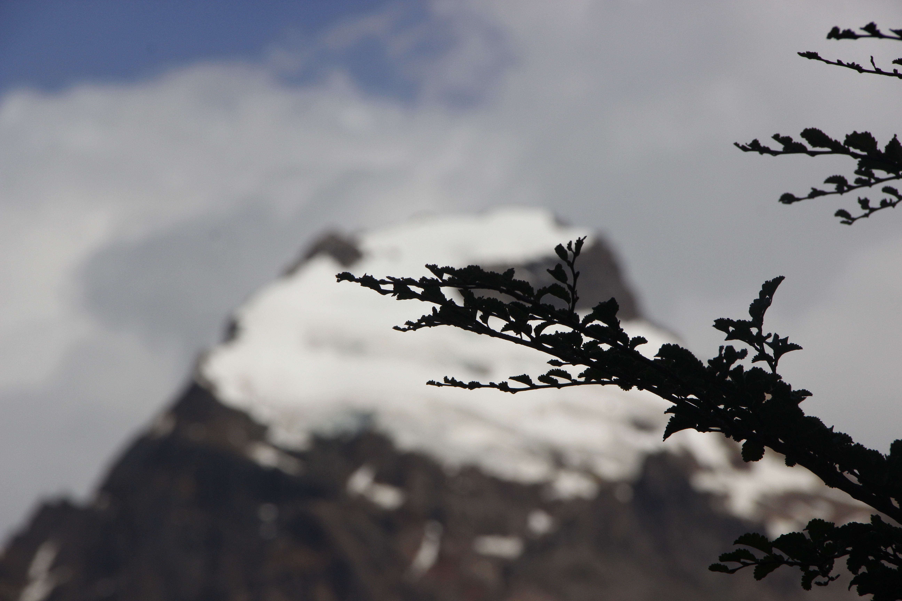
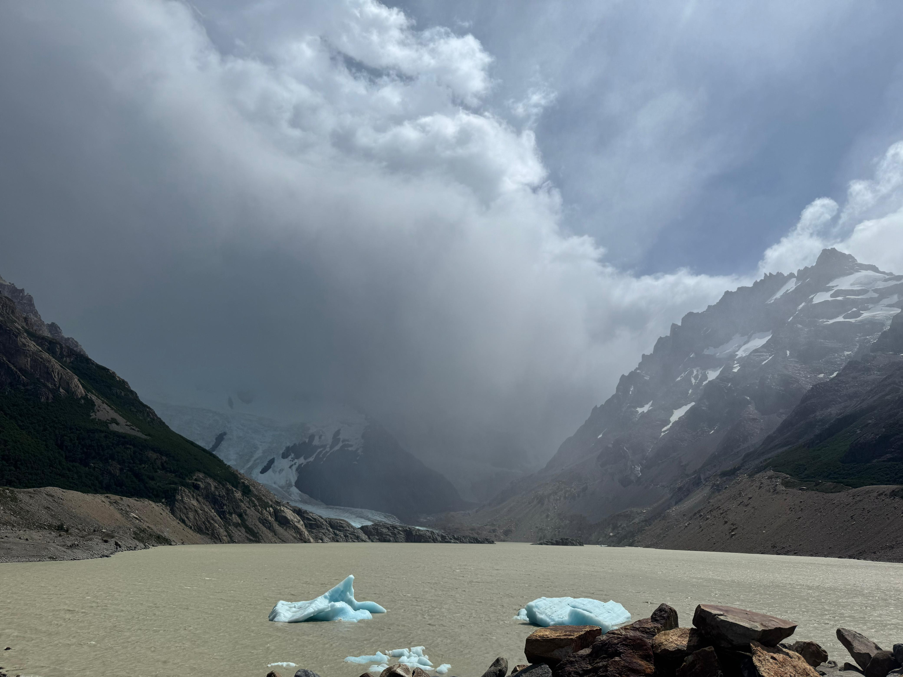
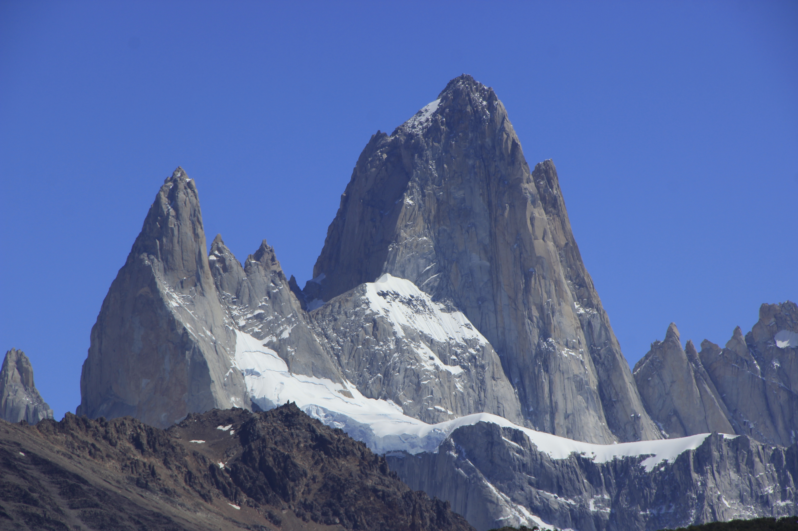

Un paraíso natural
El Chaltén se encuentra en el corazón del Parque Nacional Los Glaciares, un área protegida que alberga una increíble diversidad de flora y fauna. El parque es hogar de especies como el cóndor andino, el guanaco, el zorro colorado y una gran variedad de aves y plantas endémicas.

Glaciares imponentes
El Parque Nacional Los Glaciares es famoso por sus impresionantes glaciares, siendo el más conocido el Glaciar Perito Moreno. Este glaciar es uno de los pocos en el mundo que sigue avanzando, y su ruptura periódica es un espectáculo natural que atrae a miles de visitantes cada año.

Picos majestuosos
El Chaltén está rodeado por algunos de los picos más emblemáticos de la Patagonia, como el Monte Fitz Roy y el Cerro Torre. Estos picos no solo ofrecen vistas impresionantes, sino que también son destinos populares para montañistas y amantes del trekking.
